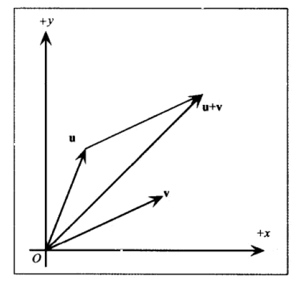
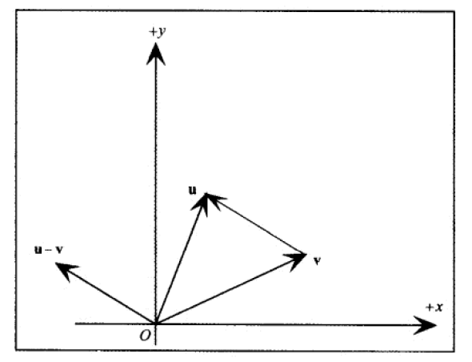
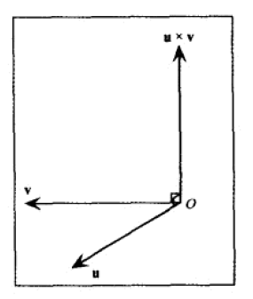

向量
向量是一个有方向的 线段 模(长度) 和 方向 是向量的基本属性 而无关起点终点 故向量可随便平移 通常将向量起点平移到坐标原点 之后使用终点坐标表示向量 长度为一的向量称谓单位向量
D3DXVECTOR3
DX3D中 使用 class D3DXVECTOR3 表示一个 3D 向量 D3DXVECTOR2 D3DXVECTOR4 分别表示 2D 4D 向量 成员变量 public float x , y , z 分别表示三个方向的 分量 D3DXVECTOR3 通过 传入 3个分量 或D3DXVECTOR3& 或 无参构造 //下面成员函数 提供了向量相等测试 operator == operator !=
向量长度
向量的长度 = 各分量平方和 再开方 length = sqrt(x*x+y*y+z*z) length = fabs(length); //D3DXVec3Length函数 可计算一个 向量的长度 FLOAT D3DXVec3Length( __in const D3DXVECTOR3 *pV );
向量规范化
向量规范化 就是使向量的模变为1 只需要将 向量的每个分量都 / 模 便可 //D3DXVec3Normalize 计算一个向量的标准化 向量 D3DXVECTOR3 * D3DXVec3Normalize( __inout D3DXVECTOR3 *pOut, __in const D3DXVECTOR3 *pV );
向量+/-
+/-法 只需 将各分量 进行 +/- 即可 //D3DXVECTOR3::operator+- 提供了此功能 + - += -= +几何图解  -几何图解 
向量数乘除
将各分量 和 float 乘 除 以便 缩放 向量长度 //D3DXVECTOR3::operator*/ 提供了此功能 * / *= /=
向量点积
若有向量 U V 则其点积为 UxVx + UzVz + UzVz 点积性质 若U V 点积为0 则 U V 垂直 ...>0 ...夹角小于90度 ...<0 ...大于90度 //D3DXVec3Dot 函数 返回 两向量的 点积 FLOAT D3DXVec3Dot( __in const D3DXVECTOR3 *pV1, __in const D3DXVECTOR3 *pV2 );
向量叉积
叉积 是向量另外一个定义的 乘法 运算 其不同于点积在于返回值 亦为一个向量 且新向量 和原两个向量 都 垂直 若有向量 U V P P 为 U V 的叉积 则 Px = UyVz - UzVy Py = UzVx - UxVz Pz = UxVy - UyVx 叉积几何图解  //函数返回 两向量的 叉积 D3DXVECTOR3 * D3DXVec3Cross( __inout D3DXVECTOR3 *pOut, __in const D3DXVECTOR3 *pV1, __in const D3DXVECTOR3 *pV2 );
注意
一般 D3DX的数学函数 都会将结果 返回 即使通过参数返回了 亦会如此 以方便 直接将 返回值 传入到 另外一个函数 进行调用 上面的 几何运算 除了 叉积 其他都可以推广到任意维数
矩陣
一個 m*n 的矩陣 是一個 m行 n列隊 二維數組 一個 單行 或 單列 矩陣 被稱為 行向量 或 列向量
矩陣 相等 數乘 加法
若兩個矩陣 維數相等 對應位置 數值相等 則 矩陣相等 一個數組 和矩陣 相乘 得到的新矩陣為 原矩陣中 每個數值 和 此數相乘 兩個矩陣要相加 必須 維數相同 得到的新矩陣 為兩矩陣對應位置相加
矩陣乘法
若有矩陣 A為m*n階 B為k*p階 則 C=AB 要有意義 必需 n==k C 為 m*p 階 C的每個 下標ij值為 A的第i個行向量 餘b的 第j個列向量的 點積 對於矩陣 AB 和 BA 是不等效的 既矩陣乘法不具備 交換律(特殊矩陣除外)
單位矩陣
除主對角線上元素為1 外 其餘為0 的方陣(行==列的矩陣)為單位矩陣 如下為一個 3*3 的黨委矩陣 1，0，0 0，1，0 0，0，1 一個矩陣和單位矩陣相乘 矩陣不變 (且可以交換順序) 如M為一個單位矩陣 MB = BM = B
逆矩陣
矩陣中沒有除法運算 但有一種乘法的逆運算 只有方陣才 可能有 逆矩陣 一個n*n的矩陣 其逆矩陣也是 n*n階 矩陣和其逆矩陣相乘 得到單位矩陣 逆矩陣在求解方程中很有用 如 P(-1) 表示 矩陣P的逆矩陣 P(-1)=PR 已知P(-1) R 求P P(-1)R(-1) = PRR(-1) p(-1)R(-1)=P*1=P
矩陣轉置
矩陣轉置 既將一個矩陣的 行列交換 a,b,c d,e,f g,h,i 的轉置矩陣為 a,d,g b,e,h c,f,i m*n矩陣的轉置矩陣 是n*m階的
D3DX矩陣
在 Direct3D編程時 通常只使用 4*4 的矩陣 和 1*4的行向量 這意味這 這些 矩陣的乘法一定有意義 且 可用此向量(1*4的矩陣) 和其他矩陣(4*4)相乘 1*4的向量使用 D3DXVECTOR3 或 D3DXVECTOR3表示(D3DXVECTOR3理解為第4個分量為0或1) 4*4的矩陣使用 D3DXMATRIX 表示 D3DXMATRIX重載了 矩陣相等比較 矩陣相加 相減 矩陣數乘 類型轉換 矩陣相乘 operator () ( UINT Row, UINT Col ); //像二維數組一樣 訪問矩陣中的元素
其他全局函數
//將矩陣轉換為 單位矩陣 D3DXMATRIX * D3DXMatrixIdentity( __inout D3DXMATRIX *pOut ); //轉置矩陣 D3DXMATRIX * D3DXMatrixTranspose( __inout D3DXMATRIX *pOut, __in const D3DXMATRIX *pM ); //矩陣求逆 (不存在逆矩陣 返回NULL) D3DXMATRIX * D3DXMatrixInverse( __inout D3DXMATRIX *pOut, __inout FLOAT *pDeterminant, //一般傳入NULL即可 __in const D3DXMATRIX *pM );
基本變換
D3DX 使用4*4的矩陣 而非3×3在於 為了能夠讓矩陣表示出所有變換 1*3的向量無法和 4*4矩陣 相乘 故需要擴展到1*4 將一個點 擴展到1*4的向量 需將最後一個分量w 設置為1 (以保證點平移正確) 將一個點 擴展到1*4的向量 需將最後一個分量w 設置為0 (以防止平移向量 平移向量 毫無意義 向量只有 模 方向) 擴展後的4D向量 稱為 其次向量(可能是點 或 向量) 當改變了4D向量的 w分量 既(w!=0 || w!=1)時 稱向量處於其次空間 要將其撤空間向量 移回3D空間 只要將 向量每個分量 / w
平移矩陣
要將一個向量 沿x y z 軸 平移 X Y Z 只需將向量和如下矩陣 相乘 1 0 0 0 0 1 0 0 0 0 1 0 X Y Z 1 //D3DXMatrixTranslation 創建一個平移矩陣 D3DXMATRIX * D3DXMatrixTranslation( __inout D3DXMATRIX *pOut, __in FLOAT x, __in FLOAT y, __in FLOAT z );
旋轉矩陣
要將一個向量 沿x y z軸 旋轉 Q 度 只需要和如下矩陣相乘 x 1 0 0 0 0 cosQ sinQ 0 0 -sinQ cosQ 0 0 0 0 1 //D3DXMatrixRotationX 創建一個 沿x軸 旋轉Angle弧度 的矩陣 D3DXMATRIX * D3DXMatrixRotationX( __inout D3DXMATRIX *pOut, __in FLOAT Angle ); y cosQ 0 -sinQ 0 0 1 0 0 sinQ 0 consQ 0 0 0 0 1 //D3DXMatrixRotationY 創建一個 沿y軸 旋轉Angle弧度 的矩陣 D3DXMATRIX * D3DXMatrixRotationY( __inout D3DXMATRIX *pOut, __in FLOAT Angle ); z cosQ sinQ 0 0 -sinQ cosQ 0 0 0 0 1 0 0 0 0 1 //D3DXMatrixRotationZ 創建一個 沿z軸 旋轉Angle弧度 的矩陣 D3DXMATRIX * D3DXMatrixRotationZ( __inout D3DXMATRIX *pOut, __in FLOAT Angle );
比例變換矩陣
若要將一個向量 沿x y z 縮放 X Y Z 倍 只需要和如下矩陣 相乘 X 0 0 0 0 Y 0 0 0 0 Z 0 0 0 0 1 //D3DXMatrixScaling 創建一個比例變換矩陣 D3DXMATRIX * D3DXMatrixScaling( __inout D3DXMATRIX *pOut, __in FLOAT sx, __in FLOAT sy, __in FLOAT sz );
變換組合
若有向量 v 一個平移矩陣T 一個 旋轉矩陣R 一個 縮放矩陣S 要將v先平移 再旋轉 之後 縮放 只需要 v*T*R*S 或者先 Y=T*R*S 之後再v*Y 既有多種變化 可先將 個矩陣相乘 之後再和向量相乘 然 矩陣AB和BA是不同的 故矩陣相乘時必須順序同 變換順序 (矩陣乘法 不滿足交換律)
變換函數
//D3DXVec3TransformCoord函數將一個 點 按照矩陣變換 (假設4D向量的w分量為1) D3DXVECTOR3 * D3DXVec3TransformCoord( __inout D3DXVECTOR3 *pOut, __in const D3DXVECTOR3 *pV, __in const D3DXMATRIX *pM ); //D3DXVec3TransformNormal函數將一個 向量 按照矩陣變換 (假設4D向量的w分量為0) D3DXVECTOR3 * D3DXVec3TransformNormal( __inout D3DXVECTOR3 *pOut, __in const D3DXVECTOR3 *pV, __in const D3DXMATRIX *pM );
平面
與平面 垂直的向量 稱為 平面的法向量 使用 法向量 和 平面上的一點 就可以描述平面 已知向量n 點p為某平面一點 d = -np D3DX使用 class D3DXPLANE 表示一個平面 通過傳入 float a b c d 構造(a b c 為向量 d為上文中d)
點面關係
一個平面 (n,d) n為平面法向量 和一點 p 若np+d=0 則p位於平面上 若np+d>0 則p位於平面前方 若np+d<0則p位於平面後方 若平面法向量n的模為1 則 np+d 為點p到平面的最短 有符號距離 //D3DXPlaneDotCoord 計算 np+d 的值 FLOAT D3DXPlaneDotCoord( __in const D3DXPLANE *pP, __in const D3DXVECTOR3 *pV );
平面創建
除了用(n,d)構建平面 亦可用 法向量 和 平面上一點p創建 平面 np+d=0 //根據 n d 創建平面 D3DXPLANE( FLOAT a, FLOAT b, FLOAT c, FLOAT d ); //根據 法向量 平面上一點 創建平面 D3DXPLANE * D3DXPlaneFromPointNormal( __inout D3DXPLANE *pOut, __in const D3DXVECTOR3 *pPoint, //點 __in const D3DXVECTOR3 *pNormal //法向量 ); //亦可通過平面上 不共線的 三個點 構造平面 D3DXPLANE * D3DXPlaneFromPoints( __inout D3DXPLANE *pOut, __in const D3DXVECTOR3 *pV1, __in const D3DXVECTOR3 *pV2, __in const D3DXVECTOR3 *pV3 );
平面規範化
若將法向量 規範化 其必須重新計算d 因為 np+d=0 //D3DXPlaneNormalize 將一個平面 規範化(既將n模設置為1 重新計算d後的 平面(n1,d1)) D3DXPLANE * D3DXPlaneNormalize( __inout D3DXPLANE *pOut, __in const D3DXPLANE *pP );
平面變換
Lengyel指出 可以將平面 看著4D向量 和期望 變換矩陣的逆矩陣相乘 以變換 此操作 必須先將平面 規範化 //D3DXPlaneTransform 完成平面變換 D3DXPLANE * D3DXPlaneTransform( __inout D3DXPLANE *pOut, __in const D3DXPLANE *pP, __in const D3DXMATRIX *pM );